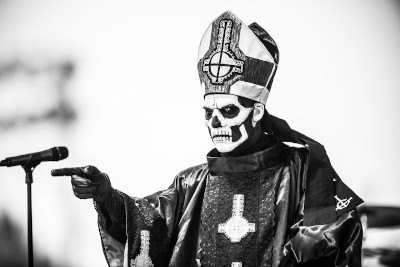
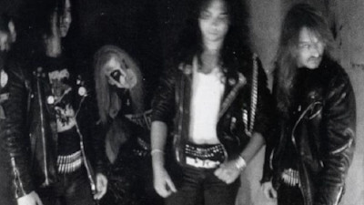
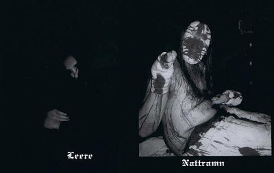

As bandas mais polêmicas do metal
Antes de mais nada, quero deixar claro que não concordo com essas bandas, e mesmo se eu concordasse, ninguém teria nada haver com isso. Eu tenho receio de muitas bandas do gênero por conta de seus princípios e letras, mas eu respeito sua decisão e até reconheço o talento desse pessoal que por sinal, tem muito mais potencial que muitos músicos por aí! Então vamos a lista.
Ghost BC
Ghost (também creditada como Ghost BC nos Estados Unidos) é uma banda sueca formada em 2008 na cidade de Linköping. É notório que a banda é diferenciada pela sua caracterização, mas essa caracterização é polêmica, principalmente do vocalista da banda, Tobias Forge. Assim que a banda nasceu, Tobias passou a encarnar o personagem Papa Emeritus, um anti-Papa demoníaco, sendo o vocalista da banda desde então. O Ghost lançou seu primeiro álbum, Opus Eponymous, em 2010. Durante um concerto no final de 2012 na cidade-natal da banda, Linköping, o Papa Emeritus foi "aposentado" e o "novo" vocalista da banda, Papa Emeritus II, foi apresentado – o Papa Emeritus II também é encenado por Tobias, mas com diferentes trajes. Em seguida, em 2013, foi lançado o segundo álbum da banda, Infestissumam. Em 2015, junto com o lançamento do terceiro álbum, Meliora, foi introduzido o Papa Emeritus III. Em abril de 2017 todos os demais membros do Ghost deixaram a banda, revelaram suas identidades, e entraram com um processo judicial contra Tobias Forge pedindo o recebimento de cachês não pagos. Na ocasião, a identidade de Tobias como Papa Emeritus – até então nunca divulgada – foi oficialmente confirmada. Após o processo vir a público, Tobias declarou que o Ghost "nunca foi formado como uma banda", sendo essencialmente um projeto individual seu.
Mayhem
Mayhem é uma banda de black metal fundada em 1984 em Oslo, Noruega. O nome Mayhem surgiu da canção "Mayhem With Mercy", encontrada no álbum Welcome to Hell (1981) da banda britânica Venom. A banda ganhou grande repercussão pelo mundo após acontecimentos polêmicos em sua carreira, como suas performances violentas nos shows, o suicídio do vocalista Dead e o assassinato do guitarrista Euronymous pelo antigo integrante Varg Vikernes, do Burzum. Dead era um aficionado pela morte, talvez por conta de um acidente sofrido na infância, em que foi dado como morto. No Mayhem o vocalista deixava isso bem claro em suas performances violentas no palco – se cortando com facas e cacos de vidro – e na sua caracterização. Em 8 de abril de 1991, Dead cometeu suicídio. Cortou os pulsos e atirou contra sua cabeça com uma espingarda. Deixou um bilhete se desculpando pelo sangue. Seu corpo foi encontrado pelo guitarrista Euronymous que, (pasmem!) não chamou a polícia: resolveu fotografar o cadáver de Dead e usar as imagens na capa de uma álbum futuro (Cara, isso é uma merda!), no caso, do bootleg Dawn of the Black Hearts (1995). Em 1993 Varg Vikernes (Burzum) assumiu o baixo, que era rival de Euronymous, fato é que a tal rivalidade (que até hoje não ficou tão bem explicada assim) terminou em um sangrento assassinato. Na noite de 10 de agosto de 1993, Varg foi ao apartamento de Euronymous discutir sobre problemas contratuais. O músico alegou ter tomado conhecimento de uma conspiração arquitetada pelo guitarrista que consistia em torturá-lo até a morte e filmar o acontecimento. Os músicos brigaram feio e Varg esfaqueou o guitarra do Mayhen 23 vezes, sendo duas no crânio.
Silencer
A banda Silencer se formou em meados de 1995 em Stockholm. Foi uma das primeiras do gênero que passou a ser conhecido como “suicidal black metal”, um estilo agressivo marcado por letras absolutamente radicais repletas de niilismo, misantropia e fúria, capaz de glorificar o suicídio, nazismo, massacres e destruição. O caos é uma das marcas registradas do gênero que possui fãs na Escandinávia, sobretudo na Suécia. O primeiro demo do Silencer, foi lançado em um circuito comercial limitado em 1998, trazendo uma única música intitulada “Pierce me” (“Fure-me”), com quase 11 minutos de duração. A faixa é marcada pelos urros guturais do vocalista. Diz a lenda que a gravação apresenta vários problemas de mixagem, mas que ela só pôde ser executada uma vez, já que o vocalista teria se auto-mutilado durante a gravação em estúdio. Verdade ou mentira, o som estridente e medonho dos seus gritos acabaram chamando a atenção de uma gravadora alemã, a Prophecy Productions, que no ano seguinte assinou um contrato com os membros da banda. Apontado como uma grande promessa do Doom Metal, a banda chegou a ser comparada com os alemães do Bethlehem, os pioneiros do gênero. Em maio de 2000, o Silencer aproveitando a controvérsia sobre o vídeo gravou sua única obra completa, com o título “Death, Pierce Me”. Na gravação Nattramn dá mais uma mostra de seu estilo bizarro em que as palavras nem soam como algo inteligível. Numa das faixas não há letra, apenas uma única frase urrada repetidamente: “Cortem a minha garganta! Cortem a minha garganta!”. Mais uma vez a gravação foi marcada por rumores. Técnicos de som teriam se negado a trabalhar com o vocalista alegando que ele não era profissional. Alguns boatos davam conta que Nattramn teria mutilado as próprias mãos e o rosto com uma faca em pleno estúdio deixando os técnicos apavorados. Apesar das dificuldades, o álbum foi lançado em 2001 acompanhado de enorme controvérsia. A capa do disco, que mostra Nattramn quase irreconhecível, ensanguentado e com uma meia cobrindo a cabeça por pouco não foi proibida em plena Suécia, país conhecido pela sua tolerância. Na fotografia, patas de porco surgem nas mangas de sua camisa manchada de sangue em uma composição por si só perturbadora. Ainda que tenha sido liberado em seu país natal, ele não teve a mesma sorte na Inglaterra e Alemanha onde uma capa preta substituiu a imagem. Diagnosticado como esquizofrênico, psicótico e maníaco depressivo, Nattramn foi internado no Hospital Psiquiátrico de Vaxjo. Houve estórias de que ele tentou escapar e esses boatos acabaram causando enorme comoção na cidade. Habitantes acreditavam que além de escapar do manicômio, ele estaria armado com um machado, disposto a fazer valer as suas ameaças. Os rumores se mostraram infundados.